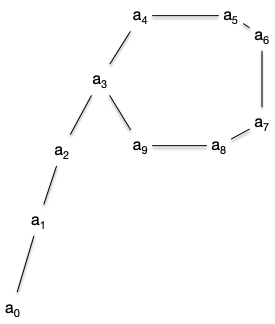

Projet Doppelganger
- François Brucker
Le but du projet est de résoudre le problème algorithmique suivant :
Problème algorithmique
- Nom : Doppelganger
- Entrée : Un tableau de $n$ entiers compris entre 1 et $n-1$
- Sortie : Un entier $v$ tel qu'il existe $0\leq i\neq j < n$ avec $v = T[i] = T[j]$
Rendu
Le projet comporte deux partie : l'une algorithmique et l'autre dédiée au code.
Il faudra rendre la partie algorithmique sous la forme d'un fichier markdown et la partie développement sous la forme d'un projet informatique.
Ordre des questions
Le but du projet est de faire les questions dans l'ordre. Non seulement les questions se suivent, mais elles racontent une histoire. La suivre vous permettra, j'espère, de passer un bon moment algorithmique.
Partie algorithmique
Tout algorithme doit être donné en pseudocode et être démontré (finitude et correction).
Partie code
Toute fonction devra être testée.
I. Prélude
Commençons par montrer que notre problème est bien défini et algorithmique.
I.1 Existence
I.1.1
Démontrez que l'entier $v$ du problème Doppelganger existe toujours.
I.1.2
Démontrez que le problème Doppelganger peut admettre plusieurs solutions.
I.2 Algorithme
Montrez que l'algorithme suivant permet de résoudre le problème Doppelganger avec comme complexités :
- temporelle en $\mathcal{O}(n^2)$
- spatiale en $\mathcal{O}(1)$ (sans compter l'entrée)
algorithme doppelganger_naif(T: [entier]) → entier:
pour chaque i de [0, T.longueur -1 ]:
pour chaque j de [i+1, T.longueur -1]:
si T[i] == T[j]:
rendre T[i]I.3 Complexité du problème
Le but du problème est de trouver une solution optimale au problème. Commençons par donner des bornes à celui-ci.
I.3.1
Montrer que la complexité temporelle du problème Doppelganger est en $\Omega(n)$ et en $\mathcal{O}(n^2)$.
I.3.2
Montrer que la complexité spatiale du problème Doppelganger est en $\Theta(1)$ (sans compter l'entrée).
I.4 Simulation
On vous demande de créer un projet vscode dans le dossier doppelganger. Ce projet contiendra :
- un fichier
doppelganger.py - un fichier
test_doppelganger.pyqui contiendra les tests des fonctions du fichierdoppelganger.py - autant de programmes principaux que demandé dans la suite du projet.
I.4.1 Vérification
Créez une fonction python vérifiera qu'un tableau passé en paramètre est une entrée valide du problème doppelganger Qui devra rendre une entrée du problème. Sa signature doit être :
doppelganger_valide(T: [int]) → boolI.4.2 Entrée
Créez une fonction python Qui devra rendre une entrée du problème. Sa signature doit être :
doppelganger_entrée(n: int) → [int]Vous ferez en sorte que la probabilité que T[i] soit égal à x soit de 1/(n-1) quelque soient x et i.
I.4.3 Sortie
Implémentez l'algorithme du I.2 dans une fonction de signature :
doppelganger_naif(T: [int]) → intI.4.4 programme principal
Créez un programme principal dans un fichier main_I.py permettant à un utilisateur de rentrer une taille de tableau. Le programme devra :
- rendre une sortie du problème Doppelganger
- donner le temps mis par l'algorithme pour s'exécuter
II. Une première borne
Affinons un peu la complexité de notre problème.
II.1 Trié
II.1.1
Montrer que si le tableau en entrée du problème est trié, on peut résoudre le problème Doppelganger en temps linéaire.
II.1.2
Déduire de la question précédente un algorithme modifiant le tableau en entrée et résolvant le problème Doppelganger avec une complexité :
- temporelle en $\mathcal{O}(n\log(n))$
- spatiale en $\mathcal{O}(1)$ (sans compter l'entrée)
II.1.3
Implémentez l'algorithme du II.1.2 dans une fonction de signature :
doppelganger_tri(T: [int]) → intII.1.4
Créez un programme principal dans un fichier main_II.py permettant à un utilisateur de rentrer une taille de tableau. Le programme devra :
- rendre une sortie du problème Doppelganger
- comparer les temps d'exécution des deux algorithmes
doppelganger_trietdoppelganger_naif
II.1.5
Expérimentalement, votre algorithme naif doit très souvent aller plus vite que votre algorithme qui tri au préalable votre tableau. Si cela n'arrive pas, faite une amélioration de votre algorithme naif pour que cela arrive.
Pourquoi ?
Vous pourrez utiliser le fait que $\lim(1-1/n)^n = 1/e$.
II.1.6
Donnez un tableau d'entré où le programme de tri est plus rapide que l'algorithme naïf. Et vérifiez expérimentalement que le temps mis pour résoudre cette instance est bien plus importante pour l'algorithme naif que pour celui qui trie au préalable le tableau.
II.2
Utilisons le fait que les entiers dont sont composés le tableau pour lequel il faut trouver le doublon sont entre 0 et n-1, soit les indices d'un tableau de taille $n$.
II.2.1
Montrez qu'en utilisant un tableau B de taille $n$ de booléens, on peut créer un algorithme permettant de résoudre le problème Doppelganger avec une complexité :
- temporelle en $\mathcal{O}(n)$
- spatiale en $\mathcal{O}(n)$ (sans compter l'entrée)
II.2.2
Implémentez l'algorithme du II.2.1 dans une fonction de signature :
doppelganger_bool(T: [int]) → intAjoutez au programme principal du fichier main_II.py le temps d'exécution de l'algorithme doppelganger_bool.
II.2.3
L'algorithme doppelganger_bool est-il effectivement le plus rapide ?
II.3
Utilisez la question II.2.3 pour montrer que la complexité temporelle du problème Doppelganger est en $\Theta(n)$ et la complexité spatiale de $\mathcal{O}(1)$ (sans compter l'entrée).
Quelle est (pour l'instant) la complexité spatiale de l'algorithme en $\mathcal{O}(n)$ et la complexité temporelle de l'algorithme de complexité spatiale $\mathcal{O}(1)$ ?
On va montrer dans la suite qu'il existe un algorithme optimal pour les deux types de complexités en même temps !
Réfléchissez-y un instant avant de continuer. Pensez-vous que ce soit possible ?
III. Interlude
Prenons un petit moment pour analyser un autre problème.
Problème algorithmique
- Nom : Période
- Entrées :
- $f: [\![ 1, n]\!] \to [\![ 1, n]\!]$
- $x \in [\![ 1, n]\!]$
- Sortie : Un entier positif $x'$ tel qu'il existe $u \neq v$ pour lesquels $f^u(x) = f^{v}(x) = x'$
III.1 Existence
Une suite $(a_i)_{0\leq i}$ est dite ultimement périodique si il existe $\lambda$ et $\mu$ tels que :
- les valeurs $a_0$ à $a_{\lambda + \mu - 1}$ sont distinctes
- $a_{ n + \lambda} = a_{ n }$ pour tout $n\geq \mu$
Une suite ultimement périodique ressemble à un $\rho$ (rho) :

III.1.1
Donnez les $\lambda$ et $\mu$ pour la suite représentée par la figure précédente.
III.1.2
Montrez que si $(a_i)_{0\leq i}$ est ultimement périodique alors les entiers $\lambda$ et $\mu$ sont uniques.
III.1.3
Montrez que si $f: [\![ 1, n]\!] \to [\![ 1, n]\!]$ et $x \in [\![ 1, n]\!]$ alors la suite $(a_i)_{0\leq i}$ définie telle que :
- $a_0 = x$
- $a_i = f(a_{i-1})$ pour $i>0$
est ultimement périodique.
III.1.4
Donnez une fonction $f: [\![ 1, n]\!] \to [\![ 1, n]\!]$ telle que la suite ultimement périodique associée (comme en III.1.3) avec $a_0 = 1$ a le même $\rho$ que la figure.
III.1.5
Montrer que l'on peut déterminer la période d'une suite ultimement périodique à partir de la sortie dsu problème Période.
III.2
Soit $(a_i)_{0\leq i}$ une suite ultimement périodique de paramètres $\lambda$ et $\mu$.
III.2.1
Montrez qu'il existe $\lambda \leq m \leq \lambda +\mu$ tel que $a_{m} = a_{2m}$.
III.2.2
Montrez que programme suivant est un algorithme permettant de résoudre le problème du point fixe.
programme lièvre_tortue(f: (entier) → entier,
x: entier
) → entier:
tortue ← f(x)
lièvre ← f(f(x))
tant que tortue ≠ lièvre:
tortue ← f(tortue)
lièvre ← f(f(lièvre))
rendre tortueVous aurez remarqué qu'un des paramètres du programme est une fonction. Le type d'une fonction est sa signature.
III.2.3
Soit y le retour de la fonction lièvre_tortue(f, x). Combien d'itération la boucle tant que va effectuer dans l'exécution de lièvre_tortue(f, y) ?
III.2.4
En déduire le $\lambda$ associé à la suite ultimement périodique associée à :
- $a_0 = x$
- $a_i = f(a_{i-1})$ pour $i>0$
Avec un algorithme de complexité :
- temporelle en $\mathcal{O}(n)$
- spatiale en $\mathcal{O}(1)$ (sans compter l'entrée)
III.3.3
Montrer que la complexité de l'algorithme lièvre_tortue est en $\mathcal{O}(n)$ si $f: [\![ 1, n]\!] \to [\![ 1, n]\!]$.
III.4
Nous allons coder cette partie. Pour cela, vous créerez deux fichiers, point_fixe.py et test_point_fixe.py dans lesquels vous créerez les fonctions demandées.
III.4.1
Codez l'algorithme de la question III.2.2. Cet algorithme devra être de signature :
lièvre_tortue(T: [entier]) -> entierLe tableau en entrée T sera un tableau de taille $n+1$ et composé d'entiers entre 1 et $n$ avec :
- $f(i) = T[i]$ pour tout $1\leq i \leq n$
- $x = T[0]$
III.4.2
Codez l'algorithme de la question III.2.4. Cet algorithme devra être de signature :
paramètre_lambda(T: [entier]) -> entierLe tableau en entrée T sera un tableau de taille $n+1$ et composé d'entiers entre 1 et $n$ avec :
- $f(i) = T[i]$ pour tout $1\leq i \leq n$
- $x = T[0]$
III.4.3
Dans un nouveau programme principal main_III.py, demandez à un utilisateur de rentrer une taille $n$ de tableau. Le programme devra :
- afficher un tableau créé aléatoirement avec
doppelganger_entrée(n + 1) - afficher la sortie de l'algorithme
lièvre_tortue - afficher le paramètre $\lambda$ de la suite ultimement périodique associée au tableau
- affiche la période de la suite ultimement périodique associée au tableau commençant avec la sortie de l'algorithme
lièvre_tortue
IV. Solution optimale
Nous allons montrer dans cette partie que l'on peut résoudre le problème Doppelganger avec un algorithme de complexité :
- temporelle en $\mathcal{O}(n)$
- spatiale en $\mathcal{O}(1)$ (sans compter l'entrée)
Cet algorithme sera alors optimal et en temps et en espace !
IV.1
Soit $(a_i)_{0\leq i}$ une suite ultimement périodique de paramètres $\mu > 0$ et $\lambda$.
IV.1.1
Montrez que $f(a_{\mu - 1}) = f(a_{\mu + \lambda - 1})$ et en déduire que $a_\mu$ est une solution au problème Doppelganger pour le tableau $T$ tel que :
- $T[0] = a_0$
- $T[i] = a_i$ pour tout $1\leq i \leq n$
IV.1.2
Soit $m$ avec $\lambda \leq m \leq \lambda +\mu$ tel que $a_{m} = a_{2m}$.
Montrez que $m$ est un multiple de $\lambda$
IV.1.3
Utilisez la question précédente pour montrer que $\mu = b + k \cdot \lambda$ avec $b = \mu + \lambda - m$ et en déduire un algorithme de complexité spatiale $\mathcal{O}(1)$ pour calculer $\mu$ à partir de $m$.
Vous pourrez faire démarrer une nouvelle tortue en continuant l'ancienne.
IV.2
Déduire de ce qui précède un algorithme permettant de résoudre le problème Doppelganger avec un algorithme de complexité :
- temporelle en $\mathcal{O}(n)$
- spatiale en $\mathcal{O}(1)$ (sans compter l'entrée)
IV.3
On termine ce projet en implémentant tout ça !
IV.3.1
Ajoutez dans le fichier point_fixe.py la fonction de signature :
Codez l'algorithme de la question III.2.4. Cet algorithme devra être de signature :
paramètre_mu(T: [entier]) -> entierLe tableau en entrée T sera un tableau de taille $n+1$ et composé d'entiers entre 1 et $n$ avec :
- $f(i) = T[i]$ pour tout $1\leq i \leq n$
- $x = T[0]$
IV.3.2
Ajoutez au programme main_III.py le calcul de $\mu$ à l'affichage.
IV.3.3
Ajoutez dans le fichier doppelganger.py un algorithme de signature :
doppelganger_optimal(T: [entier]) -> entierQui résout de façon optimale en temps et en espace le problème Doppelganger.
IV.3.4
Créez un programme principal dans un fichier main_IV.py qui compare le temps mis pour résoudre le problème Doppelganger avec la version naive, triée et optimale pour une taille de tableau donnée par l'utilisateur et en utilisant 2 tableaux :
- un crée par
doppelganger_entrée - l'autre dans le cas le pire (voir question II.1.6)
Vous devez expérimentalement retrouver l'ordre de complexité attendu pour le cas le pire.
Assurez vous d'être effectivement dans le cas le pire !
Le tri de python est en effet en $\mathcal{O}(n)$ si le tableau initial est déjà presque trié et en $\mathcal{O}(n\log(n))$ sinon.
Pour éviter les effets de bords (non utilisation du tri et du coup algorithme avec le tri plus rapide que l'algorithme optimal), utilisez un exemple du II.1.6 pour le quel le tableau n'est pas déjà trié (vous pourrez utiliser la méthode random.shuffle pour mélanger un tableau trié).